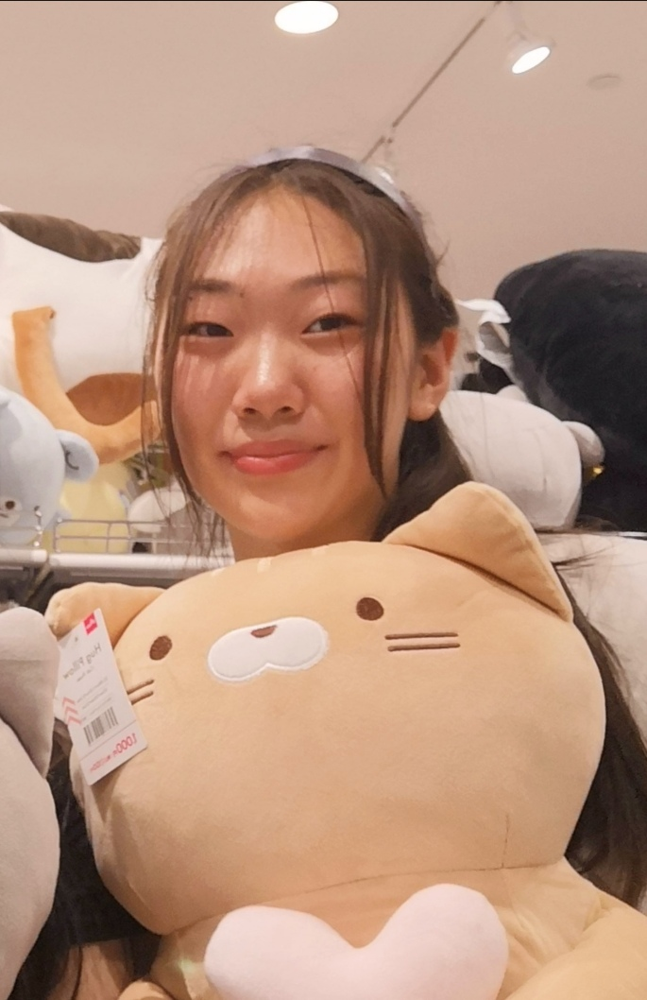
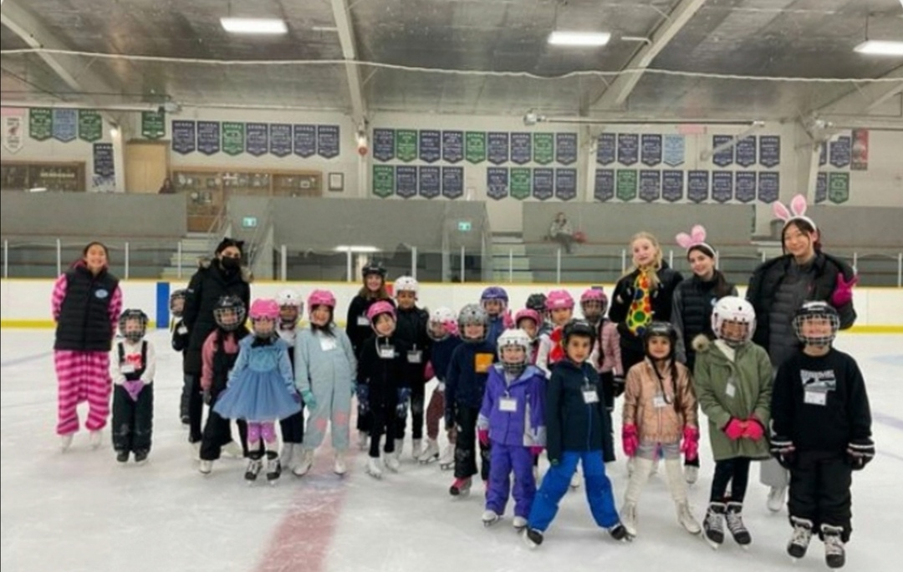
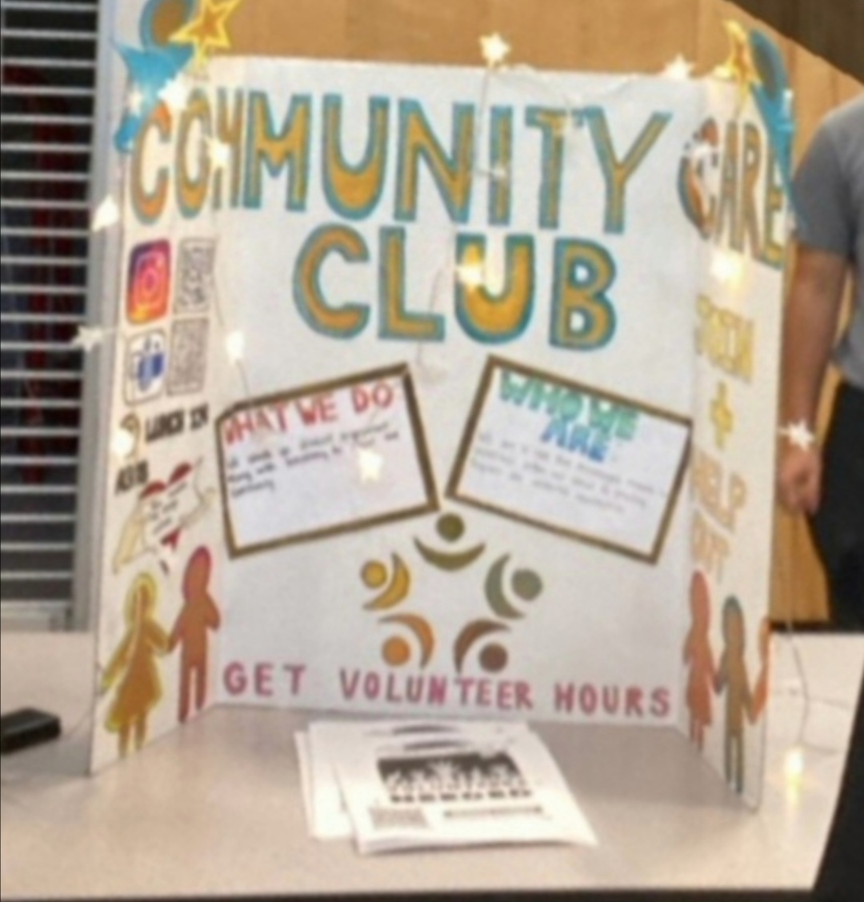
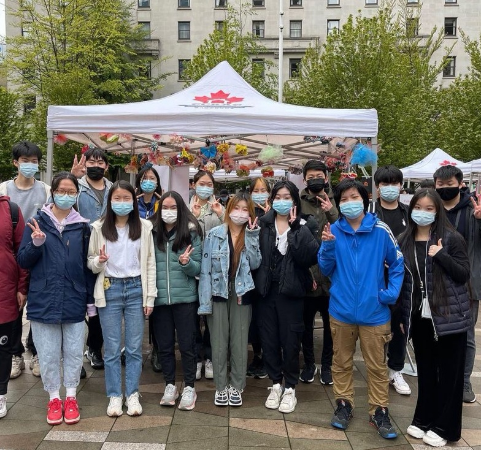
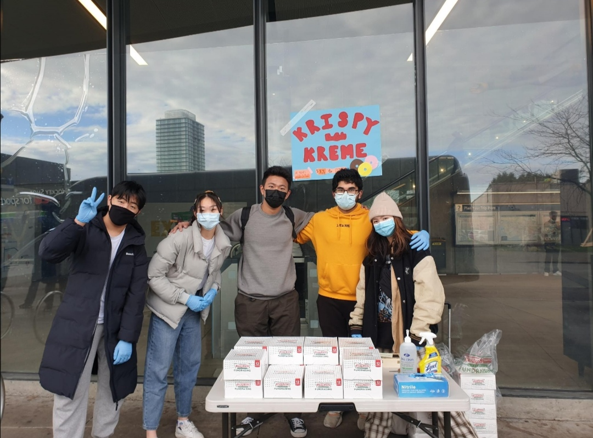

ABOUT ME

Hi, I'm Nicole! I am currently a grade 12 student attending Fleetwood Park Secondary in Surrey, British Columbia. I am enrolled in the Computer Science Co-Op program here at Fleetwood Park. I am an adaptive, collaborative, and a communicative individual who works well in teams. I am bilingual, allowing me to communicate fluently and efficiently in both English and Mandarin. In my free time, I like to read, explore different types of music, and spend time with my baby sister.
WORK EXPERIENCE

Skating Coach
I am a skating coach at the Cloverdale Skating Club (CSC). I go to the rink every week to teach skating lessons to younger kids. Before every session, I plan out lessons and draw out circuits. When we get on the ice, I set up these circuits and change the level of them according to the group I am teaching that day. As a coach, it is my responsiblity to provide a safe environment for the kids, so they are free of fear to learn and grow. My goal as a former skater is to display my passion for this sport and show how fun it can be on the ice.
VOLUNTEER EXPERIENCE

Community Care Club
As one of the executive members of the Community Care Club (CCC) at our school for two years now, I work with other members of the team every week to brainstorm and organize fundraisers and school events. At our bi-weekly meetings with all the members and volunteers of the club, I speak and communicate to everyone with how we will carry out these fundraisers and school events. Through my experiences with this club, I have learnt how to adapt and work in a team environment filled with individuals with their own unique traits, personalities, and ideas.

Youth Initiative Vancouver
I have worked with the organization "Youth Initiative Vancouver" to peer tutor elementary school kids. Every week I would volunteer my time to teach English. With every lesson came time needed to plan out these lessons. I would look for resources to use to teach English and create visually appealing Canva presentations. After every lesson, I would reach out to the the child's parent and speak to them about their child's progress and what was taught in class that day. I would take the time for myself to reflect what the child has improved on, what they could do better in, and how I could change the way I taught for the next time we had class.

The Hands
During the summer of 2021, me and a few other people co-founded "The Hands" organization to provide a hand to the community. Our main way of supporting the community is by holding fundraisers and donating the money we collect to organizations, such as the Canadian Red Cross. We create Instagram posts as a way to spread awareness and make the knowledge of current global issues more accessible to our main demographic, which are people our age. We do this by providing images, statistics, and facts on how people are negatively affected by these global issues and what one can do to help.